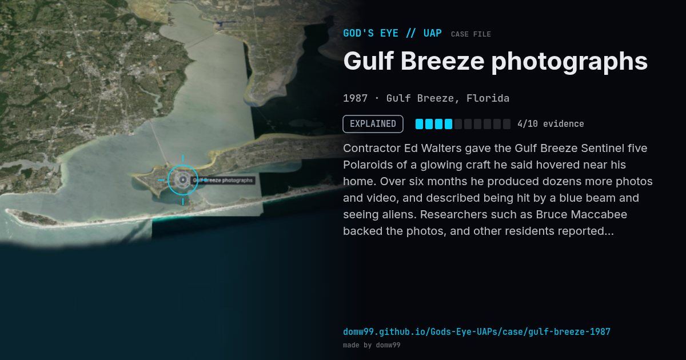

Gulf Breeze photographs

Contractor Ed Walters gave the Gulf Breeze Sentinel five Polaroids of a glowing craft he said hovered near his home. Over six months he produced dozens more photos and video, and described being hit by a blue beam and seeing aliens. Researchers such as Bruce Maccabee backed the photos, and other residents reported sightings. After the model was found in 1990 and a reporter recreated the pictures, the case became a textbook example of a UFO photo hoax.
Explanation
Considered a hoax. In 1990 the new owners of Ed Walters's former house found a styrofoam model UFO in the attic that a reporter used to reproduce the photos almost exactly. A local teenager also said he had helped fake them. Walters said the model was planted.
What was seen
Shape: Cylindrical craft with a ring of portholes and a glowing base
Witnesses: Ed Walters; other residents later came forward
Duration: Six months
Browse
- United States
- 1980s
- Explained
- Photo and video cases
- Many independent witnesses
- Photographs
- Video footage
- Lights and fireballs
- Cylinders and cigar shapes